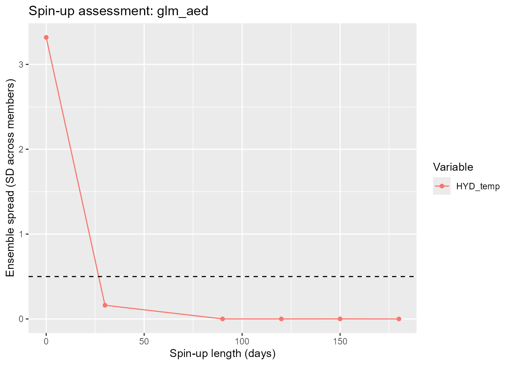
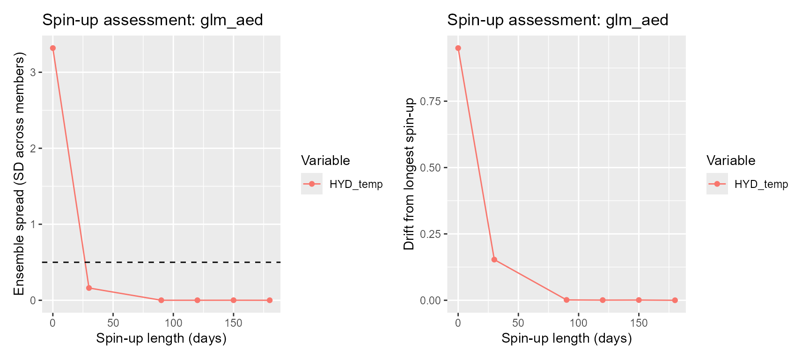
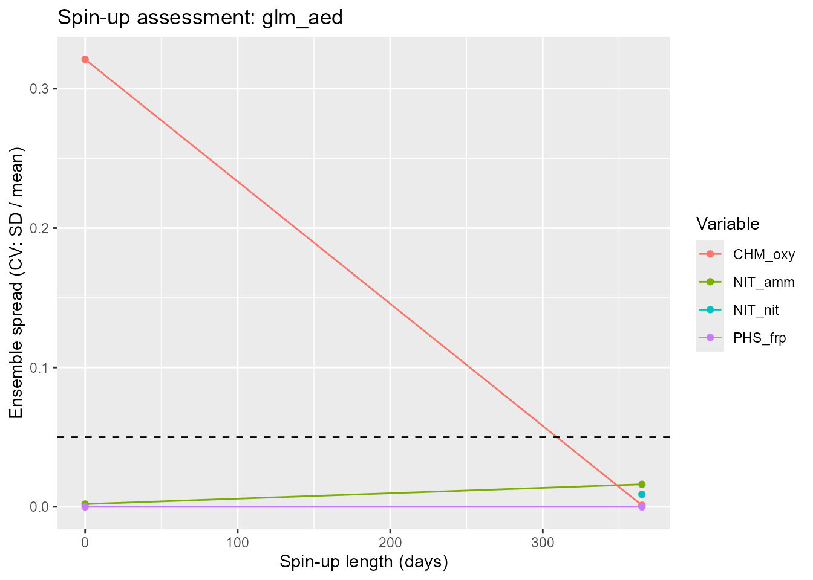

Initial conditions, uncertainty and spin-up
Source:vignettes/articles/initial-conditions-and-spin-up.Rmd
initial-conditions-and-spin-up.RmdWhy the initial state matters
Every lake simulation has to start somewhere. Before the first timestep, each model needs a complete initial state: a water level, a temperature and salinity profile, and – with biogeochemistry switched on – a starting value for every water-column pool (oxygen, nutrients, phytoplankton, …). That state is almost always a guess. It might come from a single CTD cast, a climatological profile, or nothing better than “10 °C, top to bottom”.
Spin-up is the standard fix: run the model for a lead-in period before the window you actually care about, and discard that lead-in from the output. Given enough lead-in, the physics forgets the initial guess – surface heat exchange, mixing and inflow/outflow replace the guessed state with one that is consistent with the forcing.
How much lead-in is “enough” depends on the variable:
- the surface mixed layer re-equilibrates with the atmosphere in days;
- the hypolimnion is only ventilated when the lake mixes, so a wrong deep temperature can survive most of a stratified season;
- biogeochemical pools turn over on the timescale of their sources and sinks – weeks to years.
Too short a spin-up leaves an initial-condition bias in the results
that is easy to mistake for model error. Too long a spin-up wastes
forcing data and compute, and AEME will not run it:
check_time() requires meteorological (and inflow) forcing
to span start - spin_up through stop.
This article shows how to set the initial state with the AEME 0.4.0
functions, how to treat the initial guess as one axis of ensemble
uncertainty, and how to use assess_spin_up() to choose a
spin-up length that is long enough and no longer.
We use the example lake shipped with the package. Copy its configuration directory somewhere writable and load it:
tmpdir <- tempdir()
aeme_dir <- system.file("extdata/lake/", package = "AEME")
file.copy(aeme_dir, tmpdir, recursive = TRUE)
path <- file.path(tmpdir, "lake")
aeme <- yaml_to_aeme(path = path, "aeme.yaml")
#> Warning: `yaml_to_aeme()` was deprecated in AEME 0.4.0.
#> ℹ Use `aeme_constructor()` to build an Aeme object from your own lake data, or
#> `new_aeme()` for a quick placeholder object to populate incrementally,
#> instead of a yaml file.
#> This warning is displayed once per session.
#> Call `lifecycle::last_lifecycle_warnings()` to see where this warning was
#> generated.This lake runs from 2020-08-01 to 2021-06-30 and ships daily meteorology back to 2019-01-01, so there is roughly a year and a half of forcing lead available for spin-up, plus a lake observation file we can seed the initial profile from.
Setting the initial state
set_initial_conditions() is the single entry point for
the initial state. The generic arguments – depth,
profile, wq – apply to every model;
model_init overrides them for one model.
prof <- data.frame(
depth = c(0, 5, 10, 13),
temperature = c(12, 11, 9, 8),
salt = 0
)
aeme <- set_initial_conditions(aeme, depth = 13, profile = prof)profile is a data.frame with a depth column
(positive-down, 0 = surface) and a temperature column in
°C; salt (ppt) is optional and defaults to 0.
depth is the initial water level, i.e. the height of the
surface above the lowest point of the hypsograph.
wq sets water-column biogeochemical initials, keyed by
AEME variable name – either a single value (constant with depth) or a
depth/value data.frame:
aeme <- set_initial_conditions(aeme, wq = list(CHM_oxy = 300))model_init takes per-model overrides that are merged
over the generic specification when that model is built – for example a
GLM-AED-specific temperature profile:
aeme <- set_initial_conditions(
aeme,
model_init = list(
glm_aed = list(profile = data.frame(depth = c(0, 13),
temperature = c(12, 8)))
)
)The whole specification is stored in
configuration(aeme)$initial_conditions as a list with a
default entry plus one entry per model. It survives a
load_configuration() (and therefore the reload that happens
at the end of build_aeme()).
get_initial_conditions() reads it back – the full spec, or
one model’s resolved conditions with its overrides merged
in:
get_initial_conditions(aeme) # full specification
#> $default
#> $default$depth
#> [1] 13
#>
#> $default$profile
#> depth temperature salt
#> 1 0 12 0
#> 2 5 11 0
#> 3 10 9 0
#> 4 13 8 0
#>
#> $default$wq
#> $default$wq$CHM_oxy
#> [1] 300
#>
#>
#>
#> $glm_aed
#> $glm_aed$profile
#> depth temperature salt
#> 1 0 12 0
#> 2 13 8 0
get_initial_conditions(aeme, model = "glm_aed") # resolved for GLM-AED
#> $depth
#> [1] 13
#>
#> $profile
#> depth temperature salt
#> 1 0 12 0
#> 2 13 8 0
#>
#> $wq
#> $wq$CHM_oxy
#> [1] 300Seeding from observations
If the lake has observations, from_obs = TRUE seeds the
generic profile and the water-quality initials from them (via
update_init()) before any explicit arguments are applied –
so explicit arguments still win. update_init() takes a
three-month window centred on the start month, fits temperature and
salinity against depth, and uses the window median for each
water-quality pool.
aeme <- set_initial_conditions(aeme, from_obs = TRUE)
#> Warning: ! The following variables are set to simulate but are missing an initial water
#> column or sediment value:
#> ℹ HYD_dens, HYD_strat, HYD_temp, HYD_thmcln, RAD_extc, RAD_par
get_initial_conditions(aeme, model = "glm_aed")$profile
#> depth temperature salt
#> 1 0 12 0
#> 2 13 8 0Two things happen automatically regardless of what you set here. For
backwards compatibility the generic
depth/profile are also written to
input(aeme)$init_depth /
input(aeme)$init_profile. And when the lake has an observed
water level at time$start, build_aeme()
overrides the initial water level with that observation.
Initial conditions as a source of uncertainty
It helps to think of the initial guess as one axis of an ensemble, alongside the forcing and the parameters. If you perturbed only the initial state – ran the same model, same forcing, same parameters, but from a range of plausible starting profiles – the runs would disagree at first and then converge as spin-up dissipates the differences.
“How long a spin-up do I need?” is then a concrete question:
How long until the spread that initial-condition uncertainty injects into the reported variables has collapsed below the accuracy I care about?
assess_spin_up() answers it by building exactly that
ensemble.
assess_spin_up() end to end
assess_spin_up() builds and runs one simulation per
(spin-up length, ensemble member) combination, each in its own
subdirectory of path, with written output restricted to
vars. It then extracts the modelled state at the first
timestep of the analysis period (the first timestep after spin-up) and
summarises how the members agree.
res_temp <- assess_spin_up(
aeme,
model = "glm_aed",
spin_up = c(0, 30, 90, 120, 150, 180),
perturb = list(temperature = c(-4, 0, 4)),
vars = "HYD_temp",
metric = "spread",
tolerance = 0.5,
build_args = list(ext_elev = 3),
path = file.path(tmpdir, "spinup_temp")
)
#> Warning: ! `SIL_rsi`: SIL_rsi is constant across all rows -- this may be a placeholder
#> value.
#> ℹ Check raw data or unit conversion for this variable.
#> Warning: GLM ignores the AirPres met column in daily mode and uses the default 1013.25 hPa instead.
#> This warning is displayed once per session.
#> Warning: ! `SIL_rsi`: SIL_rsi is constant across all rows -- this may be a placeholder
#> value.
#> ℹ Check raw data or unit conversion for this variable.
#> ! `SIL_rsi`: SIL_rsi is constant across all rows -- this may be a placeholder
#> value.
#> ℹ Check raw data or unit conversion for this variable.
#> ! `SIL_rsi`: SIL_rsi is constant across all rows -- this may be a placeholder
#> value.
#> ℹ Check raw data or unit conversion for this variable.
#> ! `SIL_rsi`: SIL_rsi is constant across all rows -- this may be a placeholder
#> value.
#> ℹ Check raw data or unit conversion for this variable.
#> ! `SIL_rsi`: SIL_rsi is constant across all rows -- this may be a placeholder
#> value.
#> ℹ Check raw data or unit conversion for this variable.
#> ! `SIL_rsi`: SIL_rsi is constant across all rows -- this may be a placeholder
#> value.
#> ℹ Check raw data or unit conversion for this variable.
#> ! `SIL_rsi`: SIL_rsi is constant across all rows -- this may be a placeholder
#> value.
#> ℹ Check raw data or unit conversion for this variable.
#> ! `SIL_rsi`: SIL_rsi is constant across all rows -- this may be a placeholder
#> value.
#> ℹ Check raw data or unit conversion for this variable.
#> ! `SIL_rsi`: SIL_rsi is constant across all rows -- this may be a placeholder
#> value.
#> ℹ Check raw data or unit conversion for this variable.
#> ! `SIL_rsi`: SIL_rsi is constant across all rows -- this may be a placeholder
#> value.
#> ℹ Check raw data or unit conversion for this variable.
#> ! `SIL_rsi`: SIL_rsi is constant across all rows -- this may be a placeholder
#> value.
#> ℹ Check raw data or unit conversion for this variable.
#> ! `SIL_rsi`: SIL_rsi is constant across all rows -- this may be a placeholder
#> value.
#> ℹ Check raw data or unit conversion for this variable.
#> ! `SIL_rsi`: SIL_rsi is constant across all rows -- this may be a placeholder
#> value.
#> ℹ Check raw data or unit conversion for this variable.
#> ! `SIL_rsi`: SIL_rsi is constant across all rows -- this may be a placeholder
#> value.
#> ℹ Check raw data or unit conversion for this variable.
#> ! `SIL_rsi`: SIL_rsi is constant across all rows -- this may be a placeholder
#> value.
#> ℹ Check raw data or unit conversion for this variable.
#> ! `SIL_rsi`: SIL_rsi is constant across all rows -- this may be a placeholder
#> value.
#> ℹ Check raw data or unit conversion for this variable.
#> ! `SIL_rsi`: SIL_rsi is constant across all rows -- this may be a placeholder
#> value.
#> ℹ Check raw data or unit conversion for this variable.
res_temp
#> spin_up var spread drift spread_cv drift_cv
#> 0 HYD_temp 3.3184012386 0.9501000000 2.988457e-01 7.881660e-02
#> 30 HYD_temp 0.1615845790 0.1531871212 1.355791e-02 1.276128e-02
#> 90 HYD_temp 0.0006126592 0.0012815789 5.091756e-05 1.065402e-04
#> 120 HYD_temp 0.0005833996 0.0006037500 4.857639e-05 5.038226e-05
#> 150 HYD_temp 0.0009563539 0.0007857143 7.960137e-05 6.541174e-05
#> 180 HYD_temp 0.0002557307 0.0000000000 2.132555e-05 0.000000e+00
#> HYD_temp overall
#> 30 30perturb is a named list that defines the ensemble:
-
"temperature"/"salt"– additive offsets applied to that column of the baseline initial profile (here: baseline −4 °C, baseline, and baseline +4 °C); - any
model_controls$var_aemename (e.g.CHM_oxy) – a multiplicative factor on that water-quality initial value.
The vectors are recycled to a common length, which becomes the
ensemble size; member i takes element i of every
vector. Here that is 4 spin-up lengths × 3 members = 12 builds and runs.
The baseline is
get_initial_conditions(aeme, model = "glm_aed"), falling
back to input(aeme)$init_profile /
model_controls$initial_wc, so run
set_initial_conditions() (or update_init())
first.
Reading the result
The return value is a list of class aeme_spin_up:
-
$data– long data.frame (spin_up,member,var,depth,value) of the state at the start of the analysis period. -
$summary– one row perspin_up×var, each column a mean over depth of a per-depth quantity:-
spread– standard deviation across members, in the variable’s units; -
spread_cv– that SD divided by the ensemble mean (dimensionless); -
drift– distance of this spin-up’s ensemble mean from the longest spin-up’s ensemble mean, in the variable’s units; -
drift_cv– that distance divided by the longest spin-up’s mean.
-
-
$recommended– the shortest spin-up whosemetricmeetstolerance, per variable, plusoverall(the largest of those).NULLwhentoleranceisNULL. -
$failures– any (spin-up, member) runs that errored.
res_temp$summary
#> spin_up var spread drift spread_cv drift_cv
#> 1 0 HYD_temp 3.3184012386 0.9501000000 2.988457e-01 7.881660e-02
#> 2 30 HYD_temp 0.1615845790 0.1531871212 1.355791e-02 1.276128e-02
#> 3 90 HYD_temp 0.0006126592 0.0012815789 5.091756e-05 1.065402e-04
#> 4 120 HYD_temp 0.0005833996 0.0006037500 4.857639e-05 5.038226e-05
#> 5 150 HYD_temp 0.0009563539 0.0007857143 7.960137e-05 6.541174e-05
#> 6 180 HYD_temp 0.0002557307 0.0000000000 2.132555e-05 0.000000e+00
res_temp$recommended
#> HYD_temp overall
#> 30 30plot_spin_up() draws the chosen metric against spin-up
length, with a dashed line at the tolerance:
plot_spin_up(res_temp)
Spread versus drift
spread and drift answer different
questions:
-
spread– have the members converged to each other? A small spread means the choice of initial profile no longer matters. -
drift– has the ensemble converged to the long-spin-up answer? A small drift means the spin-up is long enough that extending it further would not move the result.
You want both small. A shallow temperature perturbation can collapse in spread within 30 days while the ensemble mean still carries a deep cold bias – visible as drift – out to 180 days. Plot them side by side:
wrap_plots(
plot_spin_up(res_temp, metric = "spread"),
plot_spin_up(res_temp, metric = "drift"),
nrow = 1
)
A biogeochemical variable needs longer
Repeat the assessment for dissolved oxygen, with biogeochemistry
switched on. Oxygen is perturbed multiplicatively (half, baseline,
double), and because concentrations are strictly positive and on a
completely different scale from temperature we compare against
spread_cv – the coefficient of variation – with a 5 %
tolerance.
mc <- get_model_controls(use_bgc = TRUE)
res_bgc <- assess_spin_up(
aeme,
model = "glm_aed",
spin_up = c(0, 30, 90, 120, 150, 180, 365),
perturb = list(CHM_oxy = c(0.5, 1, 2),
PHS_frp = c(0.5, 1, 2),
NIT_nit = c(0.5, 1, 2),
NIT_amm = c(0.5, 1, 2)
),
vars = c("CHM_oxy", "PHS_frp", "NIT_nit", "NIT_amm"),
metric = "spread_cv",
tolerance = 0.05,
model_controls = mc,
build_args = list(use_bgc = TRUE, ext_elev = 5),
path = file.path(tmpdir, "spinup_oxy")
)
#> Warning: ! `SIL_rsi`: SIL_rsi is constant across all rows -- this may be a placeholder
#> value.
#> ℹ Check raw data or unit conversion for this variable.
#> ! `SIL_rsi`: SIL_rsi is constant across all rows -- this may be a placeholder
#> value.
#> ℹ Check raw data or unit conversion for this variable.
#> ! `SIL_rsi`: SIL_rsi is constant across all rows -- this may be a placeholder
#> value.
#> ℹ Check raw data or unit conversion for this variable.
#> ! `SIL_rsi`: SIL_rsi is constant across all rows -- this may be a placeholder
#> value.
#> ℹ Check raw data or unit conversion for this variable.
#> ! `SIL_rsi`: SIL_rsi is constant across all rows -- this may be a placeholder
#> value.
#> ℹ Check raw data or unit conversion for this variable.
#> ! `SIL_rsi`: SIL_rsi is constant across all rows -- this may be a placeholder
#> value.
#> ℹ Check raw data or unit conversion for this variable.
#> ! `SIL_rsi`: SIL_rsi is constant across all rows -- this may be a placeholder
#> value.
#> ℹ Check raw data or unit conversion for this variable.
#> ! `SIL_rsi`: SIL_rsi is constant across all rows -- this may be a placeholder
#> value.
#> ℹ Check raw data or unit conversion for this variable.
#> ! `SIL_rsi`: SIL_rsi is constant across all rows -- this may be a placeholder
#> value.
#> ℹ Check raw data or unit conversion for this variable.
#> ! `SIL_rsi`: SIL_rsi is constant across all rows -- this may be a placeholder
#> value.
#> ℹ Check raw data or unit conversion for this variable.
#> ! `SIL_rsi`: SIL_rsi is constant across all rows -- this may be a placeholder
#> value.
#> ℹ Check raw data or unit conversion for this variable.
#> ! `SIL_rsi`: SIL_rsi is constant across all rows -- this may be a placeholder
#> value.
#> ℹ Check raw data or unit conversion for this variable.
#> ! `SIL_rsi`: SIL_rsi is constant across all rows -- this may be a placeholder
#> value.
#> ℹ Check raw data or unit conversion for this variable.
#> ! `SIL_rsi`: SIL_rsi is constant across all rows -- this may be a placeholder
#> value.
#> ℹ Check raw data or unit conversion for this variable.
#> ! `SIL_rsi`: SIL_rsi is constant across all rows -- this may be a placeholder
#> value.
#> ℹ Check raw data or unit conversion for this variable.
#> ! `SIL_rsi`: SIL_rsi is constant across all rows -- this may be a placeholder
#> value.
#> ℹ Check raw data or unit conversion for this variable.
#> ! `SIL_rsi`: SIL_rsi is constant across all rows -- this may be a placeholder
#> value.
#> ℹ Check raw data or unit conversion for this variable.
#> ! `SIL_rsi`: SIL_rsi is constant across all rows -- this may be a placeholder
#> value.
#> ℹ Check raw data or unit conversion for this variable.
#> ! `SIL_rsi`: SIL_rsi is constant across all rows -- this may be a placeholder
#> value.
#> ℹ Check raw data or unit conversion for this variable.
#> ! `SIL_rsi`: SIL_rsi is constant across all rows -- this may be a placeholder
#> value.
#> ℹ Check raw data or unit conversion for this variable.
#> ! `SIL_rsi`: SIL_rsi is constant across all rows -- this may be a placeholder
#> value.
#> ℹ Check raw data or unit conversion for this variable.
res_bgc$summary
#> spin_up var spread drift spread_cv drift_cv
#> 1 0 CHM_oxy 4.170362e-03 6.866600000 0.321057263 0.6384863
#> 2 365 CHM_oxy 1.140863e-02 0.000000000 0.001097791 0.0000000
#> 3 0 NIT_amm 1.924501e-05 0.003455556 0.001950508 2.1654098
#> 4 365 NIT_amm 4.811252e-05 0.000000000 0.016154334 0.0000000
#> 5 0 NIT_nit 0.000000e+00 0.002111111 NA 1.0000000
#> 6 365 NIT_nit 1.099715e-05 0.000000000 0.008974044 0.0000000
#> 7 0 PHS_frp 0.000000e+00 0.000200000 0.000000000 1.0000000
#> 8 365 PHS_frp 0.000000e+00 0.000000000 0.000000000 0.0000000
res_bgc$recommended
#> CHM_oxy PHS_frp NIT_nit NIT_amm overall
#> 365 0 365 0 365
plot_spin_up(res_bgc)
#> Warning: Removed 1 row containing missing values or values outside the scale range
#> (`geom_line()`).
#> Warning: Removed 1 row containing missing values or values outside the scale range
#> (`geom_point()`).
Compare res_bgc$recommended with
res_temp$recommended. For this lake the oxygen pool takes
longer to lose the memory of its starting value than the temperature
profile does, because it is set by the balance of primary production,
respiration and sediment demand rather than by mixing alone. The spin-up
that is adequate for a physics-only study is not necessarily adequate
once biogeochemistry is reported.
A note on the *_cv metrics: they are dimensionless and
therefore comparable across variables of different magnitude, which is
what makes them the right choice for water-quality concentrations. They
are undefined where the ensemble mean crosses zero, and those depths are
dropped from the depth-average, so keep spread /
drift (in physical units) for variables that can be near
zero.
Choosing the assessment parameters
| Argument | Guidance |
|---|---|
vars |
The variables your study actually reports. The slowest-relaxing one – usually a deep or biogeochemical variable – sets the spin-up requirement, not surface temperature. |
perturb |
Size the offsets/factors to your real initial-condition uncertainty: roughly ±3–4 °C for a profile from a single cast or climatology; a factor of 0.5–2 for a nutrient or oxygen pool. |
spin_up |
Start coarse (c(0, 30, 90, 180, 365)), then add points
around the knee of the curve if you need a sharper estimate. |
metric + tolerance
|
Use spread / drift with a tolerance in
physical units (e.g. 0.5 °C) when you have a target
accuracy; use spread_cv / drift_cv with a
fractional tolerance (e.g. 0.05) to compare across
variables. |
model |
One model per call. Different engines mix at different rates, so assess each model you intend to run. |
Every (spin-up, member) cell is a full
build_aeme() + run_aeme(), so cost is
length(spin_up) * n_members runs and one subdirectory of
path per cell. Restricting vars keeps the
written output small; drop spin_up points or ensemble
members if a run is too slow.
Applying the result
Set the spin-up you chose on the object with set_time().
spin_up is in days – a single number for
all models, or a named list per model – and is stored at
time(aeme)$spin_up:
tm <- time(aeme)
aeme <- set_time(aeme,
start = format(tm$start, "%Y-%m-%d"),
stop = format(tm$stop, "%Y-%m-%d"),
spin_up = res_temp$recommended[["overall"]])From then on the spin-up window is simulated but stripped from
everything you read back: get_var(),
plot_ts(), plot_output() and the rest default
to remove_spin_up = TRUE. Just make sure the forcing still
covers start - spin_up through stop, or
build_aeme() will stop at check_time().
Scope
assess_spin_up() perturbs only the initial state. It is
not a full uncertainty or sensitivity analysis – for forcing and
parameter sensitivity see vignette("testing-parameters")
and the aemetools package (run_aeme_param(),
sa_aeme(), calib_aeme()).